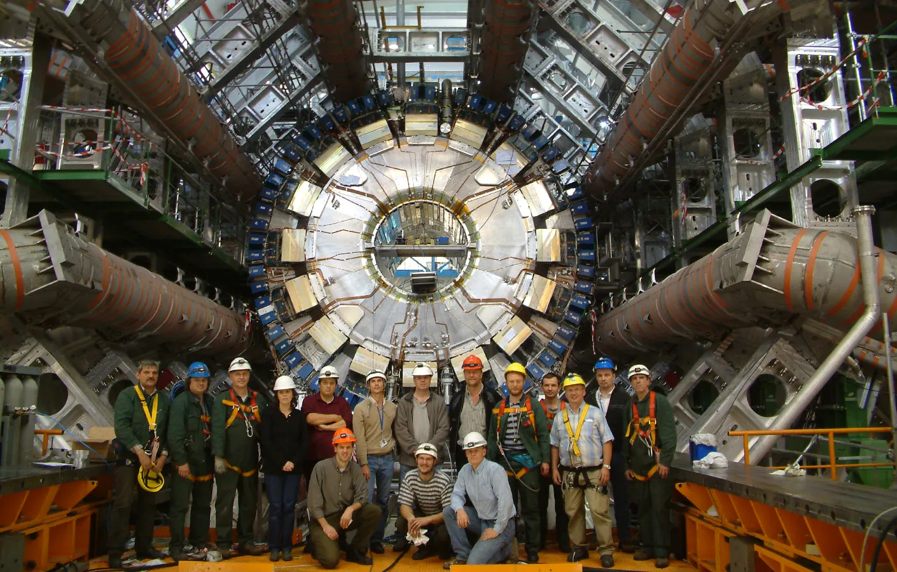

Ukrainian Physics at CERN: elementary particles and national history
06.04.26
Particle physics is attempting to answer one of the most fundamental questions of humanity: what our Universe consists of and what laws govern it. To do this, scientists recreate conditions similar to those immediately after the Big Bang and study the smallest constituents of matter.
CERN, the European Organization for Nuclear Research, is the center of such discoveries; it hosts the Large Hadron Collider, a giant 27 km ring, where proton beams are accelerated close to the speed of light, the highest velocity possible in our Universe. The protons collide, and special detectors record everything that happens as a consequence.
Inventions of Ukrainian scientists have contributed to the collider’s operations.
We spoke to Denys Timoshyn, an alumnus of the Taras Shevchenko National University in Kyiv, a researcher at the Institute of Particle and Nuclear Physics at the Faculty of Mathematics and Physics at Charles University in the Czech Republic, and a participant in one of the experiments at the Large Hadron Collider at CERN. Denys tells us how the legacy of Ukrainian scientists contributed to particle physics, how it influences our everyday lives, and how our national heritage was appropriated; what the challenges of modern education are, and what the future holds for Ukrainian physics.
Particle physics and CERN
There are numerous ongoing experiments at the Large Hadron Collider, for example, ATLAS and CMS. ATLAS is one of the two universal detectors of the Large Hadron Collider. It analyzes a wide range of phenomena — from the properties of the Higgs boson to the search for new particles. Inside it, a complex system of sensors detects particles produced after every proton collapse. ATLAS is comparable in size to a high-rise, and around 5500 scientists from all over the world participate in its research.

CMS is also a large universal detector. It “takes pictures” of the particle collision process and helps researchers understand what matter consists of and what laws govern our Universe. In fact, CMS and ATLAS are competing detectors. They “compete” to give new data for scientific papers and conferences as fast as possible. But in the end, the research on each detector complements and strengthens the other. Besides these, there are tens of other experiments operating at the Large Hadron Collider.
The main goal of the experiments is to test whether the Standard Model fully describes the fundamental laws of nature. The Standard Model is the theoretical basis of contemporary particle physics that explains all the known particles and their interactions. However, the scientists already know it’s not final. For example, the Standard Model doesn’t take dark matter into account. That’s why physicists are conducting experiments similar to CMS, looking for deviations: processes or signals that don’t fit the model’s predictions. If such deviations are reliably confirmed, it will be the dawn of new physics.

Powerful computers are used for CERN experiments. Each analysis encompasses terabytes of data and tens of millions of detected collisions. Complex algorithms, including machine learning methods and neural networks, are used to process them. However, the data-collection process for a single experiment may take years. Researchers must ensure that the signals they receive are not caused by technical artifacts or external contamination. The accuracy of the measurements is so high that even factors such as nearby train movement are taken into account. Only by excluding all possible influences can we claim that the deviations from the Standard Model we found are indeed due to new physical phenomena.
Particle physics in real life
Often, the description of the research at the Large Hadron Collider sounds like something disconnected from real life. But it’s not true. Many modern technologies we use every day grew out of fundamental research, directly or indirectly.
ASML, a company that produces unique equipment for microchip production, is a clear example. Their equipment costs millions of euros and has no equivalents worldwide. Its operation is based on extremely precise physical processes: lasers with a wavelength of around 12 nanometers are directed at microscopic drops of mercury to produce the radiation needed to “draw” structures on silicon wafers. Next, chemistry enters the stage: the wafers are treated with special mixtures, layer by layer. As a result, we get state-of-the-art microchips that power cellphones, computers, and servers. Without decades of fundamental research in physics and chemistry, such technology would be impossible.

Another field directly affected by particle physics is medicine. For example, radioisotopes are used for the treatment and diagnosis of oncological diseases. Some of those isotopes are produced at CERN by the ISOLDE experiment. There, the researchers irradiate stable atoms to produce unstable isotopes. These isotopes are administered to the patient and concentrate in specific organs and tissues. It allows doctors to “see” the function of organs, detect pathological conditions, and localize tumors, as certain isotopes concentrate in these tissues. In effect, the isotopes serve as markers that make the disease visible to diagnostic equipment.
Fundamental research also affects our understanding of climate. In the CLOUD experiment at CERN, the interaction of high-energy particles with atmospheric aerosols is studied. This helps us understand how clouds form and what role cosmic particles may play in this process. This knowledge is important for more accurate climate modeling and forecasts.
Future discoveries
Nowadays, it gets harder to make real breakthroughs in particle physics. This branch of science underwent a period of very intensive development between the 1950s and 1990s. This was an era of rapid breakthroughs, formulation of theoretical bases, and numerous Nobel Prizes. Currently, particle physics has entered a slower phase. The last major breakthrough was the discovery of the Higgs boson in 2012 at CERN. There were no similar discoveries since.

However, it doesn’t mean that the research has stopped. Currently, scientists actively test theories and refine parameter values for known phenomena. At CERN, around 80 new particles were discovered, including tetraquarks and pentaquarks. But they were all predicted by the Standard Model, so they only confirmed the existing theoretical framework.
However, most physicists are convinced that a new discovery is on the way because the Standard Model isn’t complete. It doesn’t address a range of fundamental questions, in particular, the nature of dark matter, dark energy, or gravity at the quantum level. So, future discoveries are a matter of time.
But even if researchers make a scientific breakthrough now, we may not expect them to gain international recognition for a couple of decades. It is common for a researcher to make a discovery during doctoral studies at a young age. Then, many years of testing, experimental confirmations, and independent replications of experiments occur. And only after that, probably, a Nobel Prize. The researchers who began using neural networks in physics in the 1980s and received the Nobel Prize only forty years later are a clear example. The gap between a discovery and its official recognition has expanded literally to a couple of generations.

Currently, Denys is working on data analysis of one of the experiments at the Large Hadron Collider. He studies the process by which the four top quarks form. It’s an incredibly rare event that was observed for the first time in 2023. Preliminary results from the ATLAS and CMS experiments show slightly higher values than predicted by the Standard Model, hinting at new physics. By analyzing terabytes of data, Denys is trying to determine whether these are ordinary statistical fluctuations or signs of new fundamental phenomena.
Ukrainian physicists at CERN
When discussing Ukraine’s role in the history of particle physics, we should mention the scientists who made fundamental contributions to the field. Volodymyr Veksler, born in Zhytomyr, is one of them. He formulated the autophasing principle in synchrotrons. Let’s imagine that the electric field accelerating the particles behaves like an ocean wave, and the particles are like surfers. If a particle moves slowly, the wave “pushes” it, increasing its energy; if it moves too fast, the wave slows it slightly. As a consequence, particles with different initial energies converge to close values, thereby synchronizing. This principle became a basis for creating powerful accelerators. Veksler didn’t just create the first synchrophasotron in the USSR; he also headed the United Institute for Nuclear Research in Dubna (now in Russia) and gained international recognition, including the Atom for Peace Prize.
Another prominent researcher is Liudmyla Nahorna, who was born in Uman and worked in the Institute for Scintillation Materials of the National Academy of Sciences of Ukraine. She suggested and studied the lead tungstate crystal that turned out to be incredibly effective for high-energy particle detection. Although other materials with similar properties exist, this crystal became a key component of detectors at large colliders, where high energies are required.
Finally, we should mention Georges Charpak, a Nobel Prize laureate born in Dubrovytsia. He developed the multi-wire proportional chamber, a detector that significantly improved the accuracy and speed of particle detection. This invention became a breakthrough for experiments of the 1980s. It played an important role in the discovery of the W- and Z-bosons that was one of the key confirmations of the Standard Model.
It’s very important to emphasize the Ukrainian roots of these researchers. It strengthens the reputation of Ukrainian educational and scientific institutions and facilitates international collaboration and the creation of new research programs.
Returning the names of these scientists into Ukrainian context is also important because it restores historical justice. The Soviet system was appropriating national achievements of other countries, counting them as “Soviet” or “Russian”, for decades. So when we clarify today that Nahorna or Charpak were Ukrainians, we preserve and reevaluate our own scientific heritage.
At the same time, the issue of national identity in the international environment remains loaded. For example, there is a street named after Volodymyr Veksler at CERN, but in the French description, he is still called a Russian physicist. For many scientists abroad, nationality becomes less important because modern science is highly mobile, multinational, and borderless. But it’s important for Ukraine to underscore our own scientific achievements. This way, we remind the world and ourselves: Ukrainian researchers have always been a part of the world's science.
Ukrainian education and “brain drain”
Ukrainian education gives a relatively strong theoretical basis. For example, Denys graduated from the Taras Shevchenko National University in Kyiv and didn’t have any trouble proving his qualification to continue studying and work abroad. Ukrainian schools and higher education foster abstract thinking, a key skill for both theoretical physics and coding, which mostly involves working with abstractions.
In experimental physics, though, there are obvious gaps. We severely lack equipment. Modern laboratories demand expensive detectors and electronics. For example, Central European countries actively use equipment produced by the Italian company CAEN, which builds high-precision power supply systems and data processing modules for nuclear and particle physics. Their equipment may cost up to tens of thousands of dollars, and for Ukrainian laboratories that lack the necessary financial support, these prices are usually too high.

International organizations may help overcome some of the challenges. For example, CERN has a policy of open data and open access to the program code. This means that Ukrainian students can study all the data they need and learn to use the software online at their own pace. There are many guides and courses to help students develop basic skills and understand whether they are interested in the field.
Open data allows theoreticians and phenomenologists to test their calculations and build new models without being physically present abroad. There are certain limitations, of course. For example, to work with the data from current experiments, around four terabytes of memory with a high I/O rate may be needed to update the code and algorithms on the fly. So, if for the beginner level, open resources suffice, for professional work, you need powerful equipment.

Lack of equipment affects scientific fields variably. For example, some researchers can work in laboratories in different countries for short periods, then return home to process the results. But if we are talking about chemists, for instance, their experiments often demand their daily presence. So they often have to move to countries that have the necessary equipment to continue their experiments.
Overall, international mobility of scientists is a natural process for any country. Researchers move abroad, gain new experience, and later may return to launch new projects or businesses at home. The war heavily impacts the situation. According to UNESCO, around 12% of Ukrainian scientists moved abroad or relocated to safer cities because of the war. It may become a problem. If scientists who left the country don’t come back, Ukraine loses not only people who could work here and now, but risks losing whole scientific schools of thought and continuity of the scientific tradition.
However, we shouldn’t assume that all scientists dream of relocating permanently. Many of them admit that living and working in their own country with a familiar language and culture is much more comfortable. If we want scientists to return, we should provide them with a better quality of life and create competitive working conditions, at least on par with the European level. It’s a difficult but viable way forward. Moreover, if Ukraine becomes safer, European researchers may also move here. For example, if we open new laboratories with professorship job positions, European scientists may choose to come work in Ukraine, as acquiring a professorship in the EU is rather difficult.
The post-war future of Ukraine
Ukrainian physics is currently in a dire state. But the international scientific community is trying to support our researchers. For instance, CERN has temporarily waived the outstanding financial contribution of Ukraine, amounting to around one million euros annually.
After the war ends, Ukraine has all grounds to become a full member of CERN, Denys thinks. All our neighbors, Poland, the Czech Republic, Slovakia, Estonia, Romania, and Hungary, are members of the organization. Full membership means deeper integration into the European scientific environment, broader collaborations, access to state-of-the-art technologies, and the development of expertise in the country.
Member states pay large contributions to CERN’s budget, but they also receive economic dividends. For example, research in the UK shows that young scientists who worked at CERN earn 12% more on average than their colleagues without such experience. This kind of collaboration will also facilitate the development of businesses and technologies in the country, and therefore, the post-war economic revival. Even though the situation is currently difficult, Denys believes that Ukrainian achievements in particle physics won’t be relegated to the past but will become a real possibility for the future.
The reportage is published with the support of the Alfred P. Sloan Foundation.